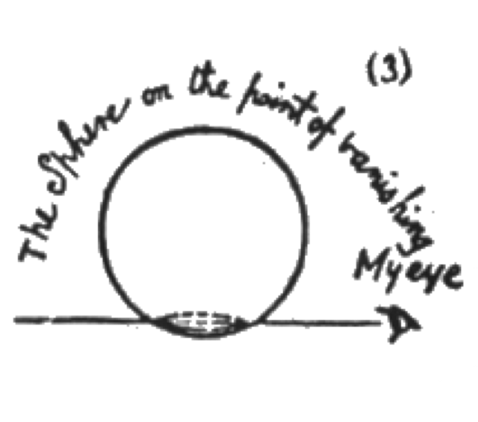
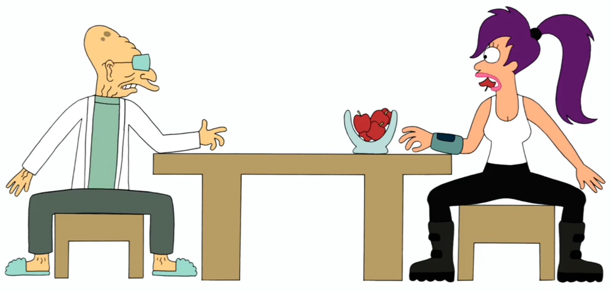

We usually associate the three usual dimensions with length, width and height (in any order), and the fourth dimension with time. However, mathematically, dimensions are essentially a artificial construct and do not have a fixed meaning linked to any specific aspect of reality. By associating each dimension with a variable, they can be used to represent pretty much anything that we can put a parameter to. Within this thesis, representations of any dimension are thus used to model various aspects of geographic information, such as the typical geographic coordinates, but also time and scale.
At the end of the 19th century, a couple of non-scientific books were notable for popularising thinking about dimensions, the satyrical Flatland: A Romance of Many Dimensions [Abbott, 1884] (Figure 0.1), and the more serious A New Era of Thought [Hinton, 1888]. These books used playful analogies between familiar 0D–3D situations and those in higher dimensions, attempting to give readers an intuitive feeling of what these abstract higher dimensions are like. Plenty of others continue to follow in their footsteps (Figure 0.2).
In order to ensure that all descriptions are formally correct, this thesis necessarily uses some formal descriptions for its data structures and algorithms. However, it also tries to provide intuitive explanations and analogies across different dimensions, offering explanations of higher-dimensional problems based on our intuitive knowledge of similar 2D and 3D cases. I hope that the result is approachable and serves to broach the subject in a practical way, and that potential readers (if any) are not put off by overly technical explanations or by the overly simplistic examples that I am able to draw.
During the past 4+ years I have found many things to love about the scientific process, but many things to hate about how its results are released and published. More than a century after Leo Tolstoy’s Letter to the Free Age Press1 and 20 years after Stevan Harnad’s subversive proposal2, it is rather sad to see that so much science is still kept behind paywalls or stymied by legal restrictions even when it is taxpayer-funded. This is not only damaging to scientific discourse, but it keeps important knowledge from the public at large, including educators and legislators.
At the same time, there is a concerted effort to restrict knowledge creation and creative expression through draconian intellectual property laws, including providing IP holders with special (extra)legal privileges and misappropriating author and user rights while extending already excessive copyright terms. Plenty of laws have been enacted on the matter with a complete lack of transparency, despite obvious harm to users and evidence to a lack of economic benefits [Hargreaves, 2011; Reda, 2014; EFI, 2015].
By releasing this thesis’ contents into the public domain and making its source publicly available, I wish to make a small statement about how I believe science should be distributed in the future—openly and without restrictions. Open access journals are a step in the right direction3, but I hope it is not too long before we are able to get rid of profit-driven journals and publishers altogether.
Following in the same spirit, the source code of the main prototype implementations that were developed during this PhD project have also been made publicly available under permissive licences, which are linked to in the corresponding parts of this thesis. As others have pointed out before me4, there is a great disparity between the alleged importance of scientific evidence and widespread acceptance of not disclosing software implementations.
My utmost thanks go to my supervisors, Hugo and Jantien. They not only provided me with years of employment and the wonderful opportunity to work on this PhD, but were always there with good ideas, and all the guidance and support anyone could ever wish. I am also very grateful to Guillaume for hosting me in Lyon and helping me to understand the details of his CGAL packages, which were used in large parts of this thesis.
Special thanks go to everyone else in the 3D geoinformation group during my time there (Filip, Liu, Ravi, Sisi and Zhiyong). It is truly a fantastic place to work and I feel privileged to have been able to contribute to it with my grain of sand.
I am also thankful to everyone at GIS technology (Edward, Elfriede, Marian, Martijn, Radan, Theo, Tjeu, Peter and Wilko). Many of them gave me insightful comments and support, especially so for Peter at the start of this PhD.
Last but not least, I especially thank my mother, Kimiyo, who has always been there supporting me, and my close friends in Mexico, the Netherlands and elsewhere, who made sure I always had things to enjoy outside work. I could not mention you all by name without making a dubious classification, which I do not want to do, and so I hope you will forgive me for just refusing to do so. Thank you all.

Figure 0.1: As Sphere tries to explain the nature of 3D space to Square by passing through its plane of view: ‘You cannot indeed see more than one of my sections, or Circles, at a time; for you have no power to raise your eye out of the plane of Flatland; but you can at least see that, as I rise in Space, so my sections become smaller’ [Abbott, 1884].↩

Figure 0.2: As Professor Farnsworth explains why a two-ended digestive system cannot exist in a 2D world: ‘As you can see, or rather can’t see, but take my word for it, such a digestive system would divide a 2D being into separate pieces.’. From Futurama season 7 episode 14.↩
1. https://en.wikisource.org/wiki/Letter_to_the_Free_Age_Press↩
2. https://en.wikipedia.org/wiki/Subversive_Proposal↩
3. Even as many of them have abusive fees that bear no relation with the marginal cost of internet distribution.↩
4. See for instance Morin et al. [2012], Joppa et al. [2013] and Ince et al. [2012]↩